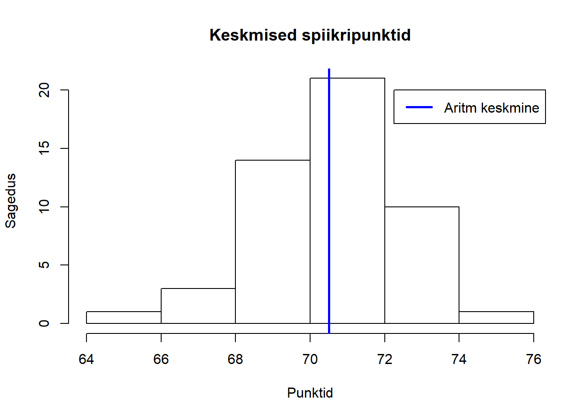

tab = read.csv("https://github.com/carlmartinkeerberg/ARGO2CSV/raw/master/IIetapp.csv",
header = T,
sep = ";",
encoding = "UTF-8",
dec = ".",
stringsAsFactors = F)
speakers = tab[c(1:62),]
alltotalavg = na.omit(as.numeric(speakers$TOTALAVG))
meantotalavg = mean(na.omit(as.numeric(speakers$TOTALAVG)))
hist(alltotalavg,
main = "Keskmised spiikripunktid",
xlab = "Punktid",
ylab = "Sagedus",
breaks = 6)
abline(v = meantotalavg,
col = "blue",
lwd = 2.5)
legend(72.25, 20,
c("Aritm keskmine"),
lwd = c(2.5),
col = c("blue"))
library(knitr)
kable(speakers,
caption = "V?itlejad")| SPEAKER | TEAM | SCHOOL | TOTALAVG | R1AVG | R2AVG | R3AVG | R4AVG | R5AVG | R1J1 | R1J2 | R1J3 | R2J1 | R2J2 | R2J3 | R3J1 | R3J2 | R3J3 | R4J1 | R4J2 | R4J3 | R5J1 | R5J2 | R5J3 | R1J | R2J | R3J | R4J | R5J |
|---|---|---|---|---|---|---|---|---|---|---|---|---|---|---|---|---|---|---|---|---|---|---|---|---|---|---|---|---|
| Karl Aaron Adson | Ärapanija | Sütevaka | 68.67 | 69.67 | 69 | 71 | 69 | 68.67 | 70 | 69 | 67 | 67.0 | 67 | 66.0 | 66 | 72.0 | 72 | [‘Ruul (135)’, ‘Uku-Laur’, ‘Lauri’] | [‘Maria’, ‘Lauri’, ‘Kaur (234)’] | [‘Erik’] | [‘Kaur (234)’] | [‘Andres Lestal’] | ||||||
| Marie Maisvee | Ärapanija | Sütevaka | 70.47 | 72.0 | 73 | 74 | 69 | 70.33 | 69 | 70 | 72 | 69.0 | 69 | 70.0 | 70 | 71.0 | 71 | [‘Ruul (135)’, ‘Uku-Laur’, ‘Lauri’] | [‘Maria’, ‘Lauri’, ‘Kaur (234)’] | [‘Erik’] | [‘Kaur (234)’] | [‘Andres Lestal’] | ||||||
| Ela Lõhmus | Ärapanija | Sütevaka | 68.4 | 70.67 | 70 | 73 | 69 | 68.33 | 69 | 69 | 67 | 68.0 | 68 | 65.0 | 65 | 70.0 | 70 | [‘Ruul (135)’, ‘Uku-Laur’, ‘Lauri’] | [‘Maria’, ‘Lauri’, ‘Kaur (234)’] | [‘Erik’] | [‘Kaur (234)’] | [‘Andres Lestal’] | ||||||
| Joosep Radusepp | Buds | Koidula | 71.13 | 71.0 | 71 | 71.33 | 71 | 70 | 73 | 71.0 | 71 | 72.0 | 72 | 70.33 | 70 | 70 | 71 | [‘Vlad (134)’] | [‘Maarja’, ‘Doris Abe’, ‘Andreas Tulver’] | [‘Kaspar (123)’] | [‘Doris Abe’] | [‘Maria’, ‘Heiki (45)’, ‘Lauri’] | ||||||
| Mikkel Mäkelä | Buds | Koidula | 71.33 | 70.0 | 70 | 72.0 | 71 | 71 | 74 | 71.0 | 71 | 72.0 | 72 | 71.67 | 71 | 72 | 72 | [‘Vlad (134)’] | [‘Maarja’, ‘Doris Abe’, ‘Andreas Tulver’] | [‘Kaspar (123)’] | [‘Doris Abe’] | [‘Maria’, ‘Heiki (45)’, ‘Lauri’] | ||||||
| Kirke Külvik | Buds | Koidula | 72.47 | 72.0 | 72 | 73.0 | 73 | 73 | 73 | 74.0 | 74 | 73.0 | 73 | 70.33 | 70 | 70 | 71 | [‘Vlad (134)’] | [‘Maarja’, ‘Doris Abe’, ‘Andreas Tulver’] | [‘Kaspar (123)’] | [‘Doris Abe’] | [‘Maria’, ‘Heiki (45)’, ‘Lauri’] | ||||||
| Markus Vaher | Deb8tractive | HTG x2/MHG | 71.27 | 71.33 | 71 | 73 | 70 | 71.0 | 71 | 72.0 | 72 | 71.0 | 71 | 71.0 | 71 | [‘Ruul (135)’, ‘Uku-Laur’, ‘Lauri’] | [‘Kaspar (123)’] | [‘Doris Abe’] | [‘Tiks (345)’] | [‘Tiks (345)’] | ||||||||
| Robert Sarnet | Deb8tractive | HTG x2/MHG | 70.27 | 71.33 | 71 | 72 | 71 | 67.0 | 67 | 72.0 | 72 | 69.0 | 69 | 72.0 | 72 | [‘Ruul (135)’, ‘Uku-Laur’, ‘Lauri’] | [‘Kaspar (123)’] | [‘Doris Abe’] | [‘Tiks (345)’] | [‘Tiks (345)’] | ||||||||
| Jan Seilenthal | Deb8tractive | HTG x2/MHG | 69.87 | 70.33 | 70 | 72 | 69 | 70.0 | 70 | 71.0 | 71 | 68.0 | 68 | 70.0 | 70 | [‘Ruul (135)’, ‘Uku-Laur’, ‘Lauri’] | [‘Kaspar (123)’] | [‘Doris Abe’] | [‘Tiks (345)’] | [‘Tiks (345)’] | ||||||||
| Mari-Liis Lillebach | Debatonaator 5000 | 21./Reaal/RAM | 71.8 | 71.0 | 71 | 73.0 | 73 | 72.0 | 72 | 71.0 | 71 | 72.0 | 72 | [‘Rauno Kivimägi’] | [‘Uku-Laur’] | [‘Doris Abe’] | [‘Maria’] | [‘Rauno Kivimägi’] | ||||||||||
| Christina Kiik | Debatonaator 5000 | 21./Reaal/RAM | 72.4 | 70.0 | 70 | 73.0 | 73 | 74.0 | 74 | 72.0 | 72 | 73.0 | 73 | [‘Rauno Kivimägi’] | [‘Uku-Laur’] | [‘Doris Abe’] | [‘Maria’] | [‘Rauno Kivimägi’] | ||||||||||
| Hans Kristjan Veri | Debatonaator 5000 | 21./Reaal/RAM | 72.0 | 72 | 71.0 | 71 | 70.0 | 70 | 69.0 | 69 | [] | [‘Uku-Laur’] | [‘Doris Abe’] | [‘Maria’] | [‘Rauno Kivimägi’] | |||||||||||||
| Anniki Mikelsaar | follow @bossekass | HTG x2/MHG | 72.27 | 72.0 | 72 | 71.33 | 71 | 71 | 72 | 74.0 | 74 | 72.0 | 72 | 72 | 72 | 72.0 | 72 | [‘Kätliin (123)’] | [‘Kätliin (123)’, ‘Küüsmaa’, ‘Tuule (234)’] | [‘Kaspar (123)’] | [‘Ruul (135)’, ‘Küüsmaa’, ‘Uku-Laur’] | [‘Vlad (134)’] | ||||||
| Johanna Issak | follow @bossekass | HTG x2/MHG | 71.47 | 71.0 | 71 | 71.67 | 71 | 71 | 73 | 72.0 | 72 | 71.67 | 71 | 72 | 72 | 71.0 | 71 | [‘Kätliin (123)’] | [‘Kätliin (123)’, ‘Küüsmaa’, ‘Tuule (234)’] | [‘Kaspar (123)’] | [‘Ruul (135)’, ‘Küüsmaa’, ‘Uku-Laur’] | [‘Vlad (134)’] | ||||||
| Brett-Peter Rästas | follow @bossekass | HTG x2/MHG | [] | [] | [] | [] | [] | |||||||||||||||||||||
| Hendry Ollin | HMU | KG | 70.8 | 70.0 | 70 | 73.0 | 73 | 71.0 | 71 | 70.0 | 70 | 70.0 | 70 | [‘Maria’] | [‘Erik’] | [‘Kristin (24)’] | [‘Maarja’] | [‘Maarja’] | ||||||||||
| Mia Maripuu | HMU | KG | 70.2 | 68.0 | 68 | 71.0 | 71 | 71.0 | 71 | 70.0 | 70 | 71.0 | 71 | [‘Maria’] | [‘Erik’] | [‘Kristin (24)’] | [‘Maarja’] | [‘Maarja’] | ||||||||||
| Uko Rasmus Tildemann | HMU | KG | 71.2 | 69.0 | 69 | 72.0 | 72 | 73.0 | 73 | 71.0 | 71 | 71.0 | 71 | [‘Maria’] | [‘Erik’] | [‘Kristin (24)’] | [‘Maarja’] | [‘Maarja’] | ||||||||||
| Juudit Lindsalu | HTG 2 | KG | 71.4 | 72.0 | 72 | 71.33 | 71 | 72 | 71 | 71.67 | 71 | 74 | 70 | 71.0 | 71 | 71.0 | 71 | [‘Vlad (134)’] | [‘Kätliin (123)’, ‘Küüsmaa’, ‘Tuule (234)’] | [‘Maarja’, ‘Kaur (234)’, ‘Richard’] | [‘Maria’] | [‘Vlad (134)’] | ||||||
| Mihkel Mariusz Jezierski | HTG 2 | KG | 70.67 | 72.0 | 72 | 70.0 | 70 | 70 | 70 | 71.33 | 71 | 71 | 72 | 70.0 | 70 | 70.0 | 70 | [‘Vlad (134)’] | [‘Kätliin (123)’, ‘Küüsmaa’, ‘Tuule (234)’] | [‘Maarja’, ‘Kaur (234)’, ‘Richard’] | [‘Maria’] | [‘Vlad (134)’] | ||||||
| Kätriin Pullerits | HTG 2 | KG | 71.67 | 73.0 | 73 | 71.67 | 72 | 72 | 71 | 71.67 | 70 | 74 | 71 | 71.0 | 71 | 71.0 | 71 | [‘Vlad (134)’] | [‘Kätliin (123)’, ‘Küüsmaa’, ‘Tuule (234)’] | [‘Maarja’, ‘Kaur (234)’, ‘Richard’] | [‘Maria’] | [‘Vlad (134)’] | ||||||
| Õnnely Roos | Justiitsministeerium | Koidula | 70.4 | 71.0 | 70 | 71 | 72 | 71.0 | 71 | 73.0 | 73 | 68.0 | 68 | 69.0 | 69 | [‘Küüsmaa’, ‘Andres Lestal’, ‘Richard’] | [‘Ruul (135)’] | [‘Kristin (24)’] | [‘Heiki (45)’] | [‘Andreas Tulver’] | ||||||||
| Arianna Sofia Jater | Justiitsministeerium | Koidula | 69.93 | 70.67 | 69 | 72 | 71 | 70.0 | 70 | 71.0 | 71 | 69.0 | 69 | 69.0 | 69 | [‘Küüsmaa’, ‘Andres Lestal’, ‘Richard’] | [‘Ruul (135)’] | [‘Kristin (24)’] | [‘Heiki (45)’] | [‘Andreas Tulver’] | ||||||||
| Kristiina Krause | Justiitsministeerium | Koidula | 70.93 | 70.67 | 70 | 71 | 71 | 70.0 | 70 | 73.0 | 73 | 71.0 | 71 | 70.0 | 70 | [‘Küüsmaa’, ‘Andres Lestal’, ‘Richard’] | [‘Ruul (135)’] | [‘Kristin (24)’] | [‘Heiki (45)’] | [‘Andreas Tulver’] | ||||||||
| Oskar Samuel Rebane | Kaosus | TIK x2/Koidula | 73.47 | 73.0 | 73 | 73.67 | 73 | 75 | 73 | 75.0 | 75 | 75 | 75 | 71.67 | 72 | 72 | 71 | 74.0 | 74 | 73 | 75 | [‘Kätliin (123)’] | [‘Maria’, ‘Lauri’, ‘Kaur (234)’] | [‘Kätliin (123)’, ‘Uku-Laur’, ‘Vlad (134)’] | [‘Erik’, ‘Richard’, ‘Tuule (234)’] | [‘Maria’, ‘Heiki (45)’, ‘Lauri’] | ||
| Saskia Bergmann | Kaosus | TIK x2/Koidula | 72.87 | 72.0 | 72 | 72.67 | 72 | 74 | 72 | 73.67 | 74 | 74 | 73 | 72.0 | 71 | 74 | 71 | 74.0 | 74 | 73 | 75 | [‘Kätliin (123)’] | [‘Maria’, ‘Lauri’, ‘Kaur (234)’] | [‘Kätliin (123)’, ‘Uku-Laur’, ‘Vlad (134)’] | [‘Erik’, ‘Richard’, ‘Tuule (234)’] | [‘Maria’, ‘Heiki (45)’, ‘Lauri’] | ||
| Triinu Jõgi | Kaosus | TIK x2/Koidula | 73.47 | 73.0 | 73 | 73.33 | 73 | 75 | 72 | 74.0 | 74 | 74 | 74 | 73.0 | 72 | 75 | 72 | 74.0 | 74 | 74 | 74 | [‘Kätliin (123)’] | [‘Maria’, ‘Lauri’, ‘Kaur (234)’] | [‘Kätliin (123)’, ‘Uku-Laur’, ‘Vlad (134)’] | [‘Erik’, ‘Richard’, ‘Tuule (234)’] | [‘Maria’, ‘Heiki (45)’, ‘Lauri’] | ||
| Marta Margareeta Bender | Katoliku 1 | Katoliku | [] | [] | [] | [] | [] | |||||||||||||||||||||
| Triinu Lota Lepp | Katoliku 1 | Katoliku | 69.6 | 71.0 | 71 | 69.0 | 70 | 68 | 69 | 70.0 | 70 | 69.0 | 69 | 69.0 | 69 | [‘Maarja’] | [‘Maarja’, ‘Doris Abe’, ‘Andreas Tulver’] | [‘Erik’] | [‘Lauri’] | [‘Ruul (135)’] | ||||||||
| Kaur Hannes Käämbre | Katoliku 1 | Katoliku | 68.73 | 70.0 | 70 | 68.67 | 69 | 69 | 68 | 69.0 | 69 | 69.0 | 69 | 67.0 | 67 | [‘Maarja’] | [‘Maarja’, ‘Doris Abe’, ‘Andreas Tulver’] | [‘Erik’] | [‘Lauri’] | [‘Ruul (135)’] | ||||||||
| Lotta Vaher | Katoliku 1 | Katoliku | 70.27 | 72.0 | 72 | 70.33 | 71 | 69 | 71 | 71.0 | 71 | 70.0 | 70 | 68.0 | 68 | [‘Maarja’] | [‘Maarja’, ‘Doris Abe’, ‘Andreas Tulver’] | [‘Erik’] | [‘Lauri’] | [‘Ruul (135)’] | ||||||||
| Kirke Antsmäe | No Team | [] | [] | [] | [] | [] | ||||||||||||||||||||||
| Kadri Muuga | Uus tiim | 68.0 | 68 | 64.0 | 64 | 69.0 | 69 | 67.0 | 67 | [] | [‘Rauno Kivimägi’] | [‘Tuule (234)’] | [‘Kaur (234)’] | [‘Rauno Kivimägi’] | ||||||||||||||
| Aleksander Vunk | kestaMesta | 72.27 | 71.0 | 71 | 76.0 | 76 | 71.0 | 72 | 71 | 70 | 71.0 | 71 | 71 | 71 | 72.33 | 72 | 71 | 74 | [‘Maria’] | [‘Uku-Laur’] | [‘Küüsmaa’, ‘Lauri’, ‘Tiks (345)’] | [‘Erik’, ‘Richard’, ‘Tuule (234)’] | [‘Küüsmaa’, ‘Erik’, ‘Doris Abe’] | |||||
| Tom Siuste | kestaMesta | 72.33 | 71.0 | 71 | 74.0 | 74 | 71.67 | 71 | 72 | 72 | 72.33 | 73 | 72 | 72 | 72.67 | 72 | 72 | 74 | [‘Maria’] | [‘Uku-Laur’] | [‘Küüsmaa’, ‘Lauri’, ‘Tiks (345)’] | [‘Erik’, ‘Richard’, ‘Tuule (234)’] | [‘Küüsmaa’, ‘Erik’, ‘Doris Abe’] | |||||
| Karl-Endrik Kriis | kestaMesta | 71.73 | 70.0 | 70 | 74.0 | 74 | 70.67 | 72 | 71 | 69 | 72.0 | 72 | 72 | 72 | 72.0 | 72 | 71 | 73 | [‘Maria’] | [‘Uku-Laur’] | [‘Küüsmaa’, ‘Lauri’, ‘Tiks (345)’] | [‘Erik’, ‘Richard’, ‘Tuule (234)’] | [‘Küüsmaa’, ‘Erik’, ‘Doris Abe’] | |||||
| Gertin Kender | No Team | [] | [] | [] | [] | [] | ||||||||||||||||||||||
| Karl Oskar Pungas | No Team | [] | [] | [] | [] | [] | ||||||||||||||||||||||
| Mattias Allpere | No Team | [] | [] | [] | [] | [] | ||||||||||||||||||||||
| Norman de Vries | Kolmainsus | 72.0 | 72 | 71.0 | 71 | 73.0 | 72 | 75 | 72 | [‘Rauno Kivimägi’] | [‘Erik’] | [‘Maarja’, ‘Kaur (234)’, ‘Richard’] | [] | [] | ||||||||||||||
| Eva Lotta Mett | Kolmainsus | 69.47 | 69.0 | 69 | 70.0 | 70 | 71.33 | 70 | 72 | 72 | 68.0 | 68 | 69.0 | 69 | [‘Rauno Kivimägi’] | [‘Erik’] | [‘Maarja’, ‘Kaur (234)’, ‘Richard’] | [‘Heiki (45)’] | [‘Ruul (135)’] | |||||||||
| Anette Andersoo | Kolmainsus | 71.13 | 73.0 | 73 | 71.0 | 71 | 71.67 | 71 | 71 | 73 | 70.0 | 70 | 70.0 | 70 | [‘Rauno Kivimägi’] | [‘Erik’] | [‘Maarja’, ‘Kaur (234)’, ‘Richard’] | [‘Heiki (45)’] | [‘Ruul (135)’] | |||||||||
| James Paul Arney | May Contain Nuts | 74.13 | 73.0 | 73 | 77.0 | 77 | 74.67 | 76 | 74 | 74 | 73.33 | 73 | 74 | 73 | 72.67 | 74 | 73 | 71 | [‘Kaspar (123)’] | [‘Ruul (135)’] | [‘Kätliin (123)’, ‘Uku-Laur’, ‘Vlad (134)’] | [‘Ruul (135)’, ‘Küüsmaa’, ‘Uku-Laur’] | [‘Küüsmaa’, ‘Erik’, ‘Doris Abe’] | |||||
| Karoliine Pärlin | May Contain Nuts | 72.4 | 72.0 | 72 | 73.0 | 73 | 73.67 | 74 | 73 | 74 | 71.33 | 70 | 73 | 71 | 72.0 | 72 | 72 | 72 | [‘Kaspar (123)’] | [‘Ruul (135)’] | [‘Kätliin (123)’, ‘Uku-Laur’, ‘Vlad (134)’] | [‘Ruul (135)’, ‘Küüsmaa’, ‘Uku-Laur’] | [‘Küüsmaa’, ‘Erik’, ‘Doris Abe’] | |||||
| Markus Laanoja | May Contain Nuts | 73.53 | 73.0 | 73 | 75.0 | 75 | 74.0 | 75 | 75 | 72 | 72.67 | 71 | 74 | 73 | 73.0 | 73 | 73 | 73 | [‘Kaspar (123)’] | [‘Ruul (135)’] | [‘Kätliin (123)’, ‘Uku-Laur’, ‘Vlad (134)’] | [‘Ruul (135)’, ‘Küüsmaa’, ‘Uku-Laur’] | [‘Küüsmaa’, ‘Erik’, ‘Doris Abe’] | |||||
| Marie Valdes | Me ei lähe etapile, sest meil pole nime | 70.27 | 69.33 | 69 | 70 | 69 | 69.0 | 69 | 71.0 | 71 | 69.0 | 69 | 73.0 | 73 | [‘Küüsmaa’, ‘Andres Lestal’, ‘Richard’] | [‘Richard’] | [‘Maria’] | [‘Maarja’] | [’Andres Lestal’] | |||||||||
| Johanna Järvekülg | Me ei lähe etapile, sest meil pole nime | 70.73 | 70.67 | 71 | 71 | 70 | 70.0 | 70 | 71.0 | 71 | 70.0 | 70 | 72.0 | 72 | [‘Küüsmaa’, ‘Andres Lestal’, ‘Richard’] | [‘Richard’] | [‘Maria’] | [‘Maarja’] | [’Andres Lestal’] | |||||||||
| Susanna Mett | Me ei lähe etapile, sest meil pole nime | 70.53 | 69.67 | 69 | 70 | 70 | 71.0 | 71 | 71.0 | 71 | 70.0 | 70 | 71.0 | 71 | [‘Küüsmaa’, ‘Andres Lestal’, ‘Richard’] | [‘Richard’] | [‘Maria’] | [‘Maarja’] | [’Andres Lestal’] | |||||||||
| Carmen Šimanis | Uus tiim | 66.6 | 68.0 | 68 | 66.0 | 66 | 63.0 | 63 | 68.0 | 68 | 68.0 | 68 | [‘Maarja’] | [‘Rauno Kivimägi’] | [‘Tuule (234)’] | [‘Kaur (234)’] | [‘Rauno Kivimägi’] | |||||||||||
| Eliisa Täht | Null punkti | 67.2 | 68.0 | 68 | 68.0 | 68 | 63.0 | 63 | 68.0 | 68 | 69.0 | 69 | [‘Erik’] | [‘Richard’] | [‘Tuule (234)’] | [‘Tiks (345)’] | [‘Tiks (345)’] | |||||||||||
| Ketli Rihkrand | Null punkti | 66.2 | 68.0 | 68 | 68.0 | 68 | 64.0 | 64 | 64.0 | 64 | 67.0 | 67 | [‘Erik’] | [‘Richard’] | [‘Tuule (234)’] | [‘Tiks (345)’] | [‘Tiks (345)’] | |||||||||||
| Kirsika Rahu | Null punkti | 65.4 | 67.0 | 67 | 67.0 | 67 | 63.0 | 63 | 64.0 | 64 | 66.0 | 66 | [‘Erik’] | [‘Richard’] | [‘Tuule (234)’] | [‘Tiks (345)’] | [‘Tiks (345)’] | |||||||||||
| Richard Mõisaäär | Söörömöö | 69.8 | 70.0 | 70 | 68.0 | 68 | 71.0 | 71 | 69.0 | 69 | 71.0 | 71 | [‘Kaspar (123)’] | [‘Kaspar (123)’] | [‘Maria’] | [‘Lauri’] | [‘Andreas Tulver’] | |||||||||||
| Gerly Ots | Söörömöö | 70.0 | 68.0 | 68 | 72.0 | 72 | 72.0 | 72 | 68.0 | 68 | 70.0 | 70 | [‘Kaspar (123)’] | [‘Kaspar (123)’] | [‘Maria’] | [‘Lauri’] | [‘Andreas Tulver’] | |||||||||||
| Rauno Rauniste | Söörömöö | 69.4 | 68.0 | 68 | 69.0 | 69 | 72.0 | 72 | 68.0 | 68 | 70.0 | 70 | [‘Kaspar (123)’] | [‘Kaspar (123)’] | [‘Maria’] | [‘Lauri’] | [‘Andreas Tulver’] | |||||||||||
| Luisa Jõpiselg | See väitlus oli väga tasavägine | 68.87 | 70.0 | 70 | 69.0 | 69 | 68.33 | 69 | 69 | 67 | 67.0 | 67 | 70.0 | 70 | [‘Erik’] | [‘Rauno Kivimägi’] | [‘Küüsmaa’, ‘Lauri’, ‘Tiks (345)’] | [‘Doris Abe’] | [‘Maarja’] | |||||||||
| Greete Kera | See väitlus oli väga tasavägine | 69.07 | 69.0 | 69 | 69.0 | 69 | 69.33 | 70 | 69 | 69 | 68.0 | 68 | 70.0 | 70 | [‘Erik’] | [‘Rauno Kivimägi’] | [‘Küüsmaa’, ‘Lauri’, ‘Tiks (345)’] | [‘Doris Abe’] | [‘Maarja’] | |||||||||
| Maria Jõpiselg | See väitlus oli väga tasavägine | 68.4 | 68.0 | 68 | 68.0 | 68 | 67.0 | 67 | 68 | 66 | 69.0 | 69 | 70.0 | 70 | [‘Erik’] | [‘Rauno Kivimägi’] | [‘Küüsmaa’, ‘Lauri’, ‘Tiks (345)’] | [‘Doris Abe’] | [‘Maarja’] | |||||||||
| Dummy 1 | No Team | [] | [] | [] | [] | [] | ||||||||||||||||||||||
| Dummy 2 | No Team | [] | [] | [] | [] | [] | ||||||||||||||||||||||
| Dummy 3 | No Team | [] | [] | [] | [] | [] | ||||||||||||||||||||||
| Karl Saamuel Hollman | Uus tiim | 68.2 | 69.0 | 69 | 67.0 | 67 | 65.0 | 65 | 71.0 | 71 | 69.0 | 69 | [‘Maarja’] | [‘Rauno Kivimägi’] | [‘Tuule (234)’] | [‘Kaur (234)’] | [‘Rauno Kivimägi’] |